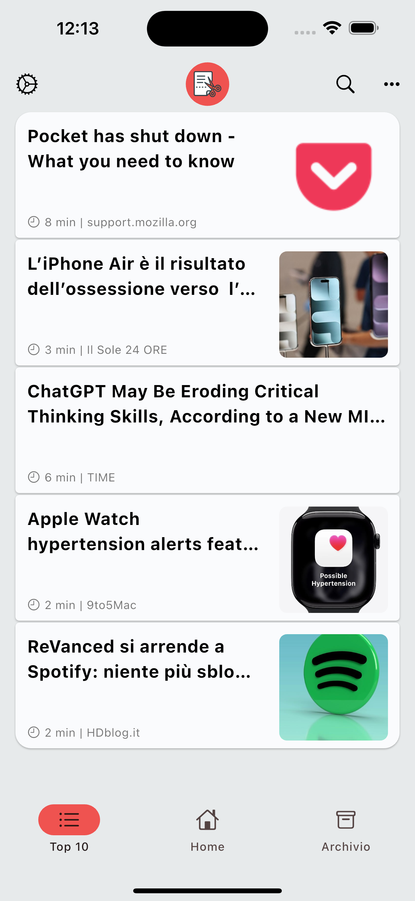
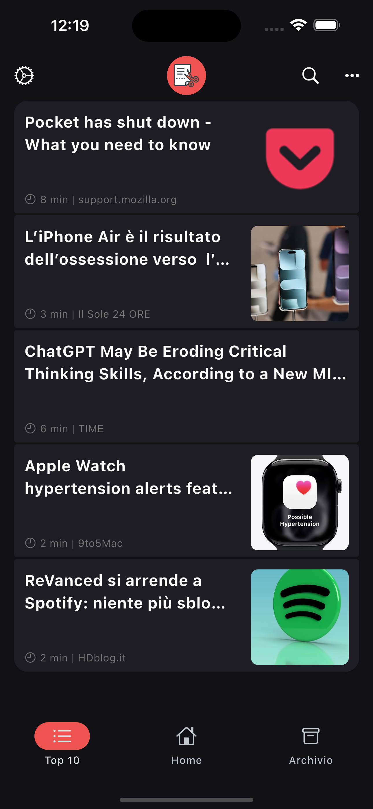
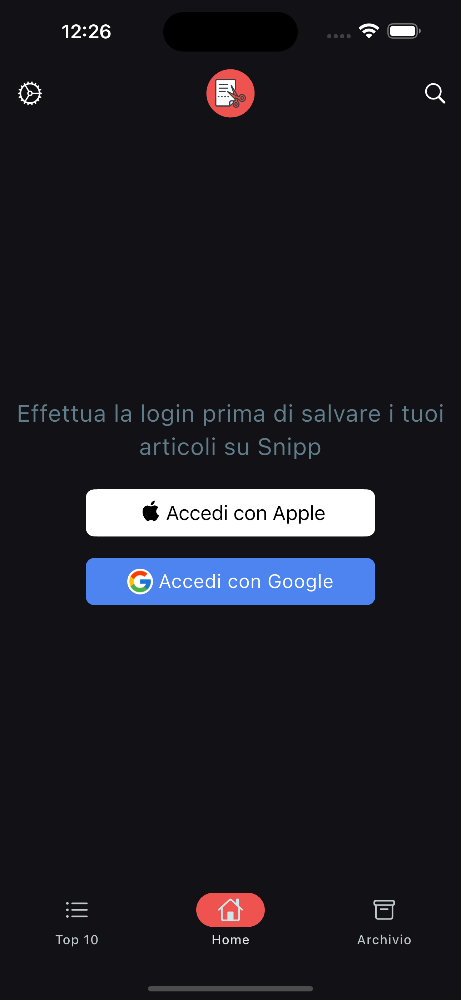
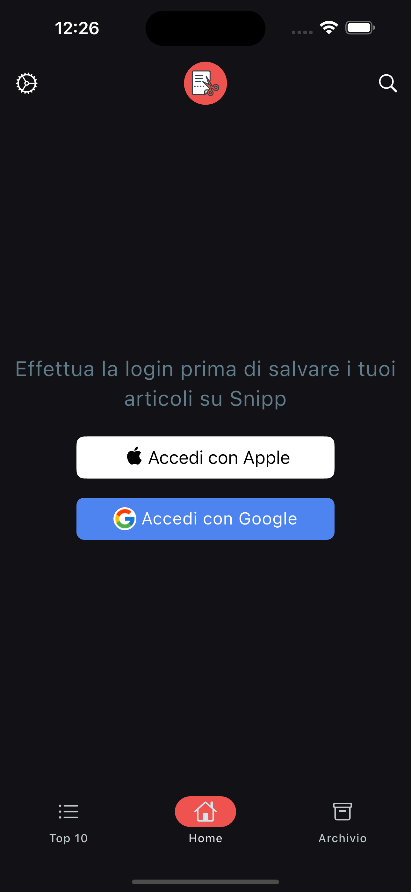

Top 10
This page displays the 10 most saved articles across all users. It’s a great way to discover popular and trending content that many in the Snipp community find interesting.



Snipp is a convenient app designed to help you save interesting articles and read them later, without distractions. It cleans up the clutter and ads that typically fill web pages, providing a clean and focused reading experience. With Snipp, you can enjoy your saved articles even when offline, making it perfect for reading anytime, anywhere.
Before you can start saving your favorite articles with Snipp, you’ll need to log in to your account. This screen allows you to sign in securely using either your Apple or Google account. Logging in ensures your saved articles are always available to you, safely synced and ready to read—no matter which device you use. Just tap the Apple or Google button to complete the process. Once logged in, all your articles will be saved to your personal archive in Snipp, ready to access at any time.
 

This page displays the 10 most saved articles across all users. It’s a great way to discover popular and trending content that many in the Snipp community find interesting.
Your personal home page shows only the articles you have saved. This is your private reading list where you can easily access and manage your saved content.
The archive is where you keep articles you have decided to save permanently. It’s your personal library, organized for long-term access and reference whenever you want to revisit important reads.
You can add new articles to Snipp in two simple ways. First, tap the + button located at the top right corner of the app to manually add an article. Alternatively, the easiest way is to use the Share button on your phone from any other app — such as your browser, social media apps, or news sources — and select Snipp from the share options. This lets you save interesting content instantly without leaving your current app.
Plus, Snipp automatically detects when you copy a URL to your clipboard and will prompt you to add it to your saved articles—no extra steps needed!
Snipp offers a convenient search feature accessible by tapping on the search button. You can quickly find articles by typing keywords related to the titles or content. This makes it easy to locate saved articles or discover specific content without scrolling through your entire archive.
The Settings page allows you to personalize your Snipp experience. Here, you can change the app’s theme to match your preference, select the language in which you want the Top 10 articles to be displayed, and adjust the font size for comfortable reading.
Besides these, the Settings offer many other customization options to fit your reading habits and make Snipp truly yours.